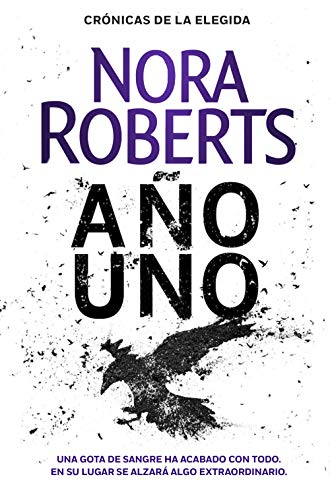

Cronicas de la Elegida - Nora Roberts
1. Año Uno

Sipnosis
Una gota de sangre ha acabado con todo. En su lugar se alzará algo extraordinario.
Año Nuevo, Escocia. Una familia de cazadores se contagia de un virus procedente de la sangre de un faisán. Regresan a casa convertidos, sin saberlo, en transmisores de una misteriosa plaga que causará millones de víctimas a una velocidad imparable.
Mientras las personas enferman y mueren, el terror y la locura se extienden por todo el planeta. Pero entre las ruinas y el caos hay un destello de esperanza: un grupo de supervivientes en apariencia inmunes al germen emprende un viaje hacia lo desconocido. Ninguno sabe si el periplo acabará en algún momento, ni si habrá supervivientes. Lo único que saben es que algunos de ellos han desarrollado extraños poderes que tal vez puedan ayudarles a instaurar un nuevo orden.
Porque si ha llegado el final, lo siguiente es un nuevo comienzo.
Reseña
La historia comienza con la llegada del virus conocido como El Juicio Final. Este virus se extenderá con una rapidez insospechada por todo el mundo, y es que no existe cura. Ni forma de detenerlo.
Los contagiados comenzarán a morir a los pocos días de contraerlo hasta reducir a la población a unos puñados de supervivientes repartidos por todo el mundo. ¿Qué tienen ellos para no haber sucumbido a esa muerte tan agónica? Esa pregunta será la que mantenga a nuestros protagonistas en alerta mientras intentan dar con sus familiares perdidos con una pequeña llama de esperanza.
El caso es, que comienzan a formarse comunidades dispuestas a sobrevivir y a ayudar aceptando este nuevo mundo. Un mundo donde comienzan a despertar poderes dentro de algunas personas. Un mundo donde hadas, duendes, brujos… se extenderán por la faz de la tierra intentando comprender qué les está pasando. El problema viene con que al igual que llega luz con esa magia, también lo hace la oscuridad, pues no todos están preparados para vivir en armonía tras El Juicio Final.
Los personajes son una auténtica gozada, pero tengo que admitir que son tantos que me perdí en varias ocasiones. Aun así, con el paso de las páginas se van perfilando, vamos descubriendo los que son protagonistas (pues no es la típica novela en la que se identifican en los primeros capítulos) y los que van quedando en un plano un poco más secundario.
El objetivo parece claro, pero al igual que los personajes tampoco lo es. Andaremos a oscuras de la mano de nuestros protagonistas con este nuevo mundo. Viviremos aventuras, situaciones límite y sentiremos el peso en sus corazones cada vez que tengan que tomar una decisión radical.